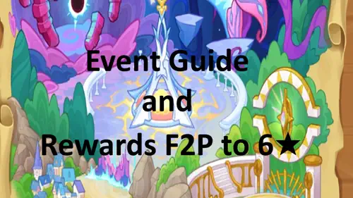
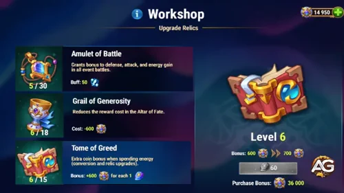

Orm's Clash of Worlds event pairs chapter battles with Veil Weaver development quests. This guide focuses on a free-to-play plan: manage saved resources, pick affordable upgrades, and turn event rewards into lasting Titan progress.
The event has not started yet. Use the preview values below for planning and confirm rewards and costs in the game when it opens.

Set a spending ceiling in saved Emeralds and a separate budget for permanent Titan upgrades. Treat the final chapter as a stretch goal: do not assume that a free account can finish the entire event. Recalculate your target after collecting the available free rewards.
Orm is a Distortion support Titan. His Ruinous Bond links a front-line ally to a central enemy, reducing the ally's incoming damage during the link and delivering accumulated damage when it expires.
Before investing heavily, consider whether your current Titan lineup needs this support role. A smaller account may benefit more from strengthening its established core than from chasing every new release.
Keep event-run progress and permanent Orm upgrades on separate checklists. Check individual thresholds in the complete Orm event missions guide.
| Focus | F2P approach |
|---|---|
| Clash of Worlds battles | Search for Truth ends at 71 wins. Plan several sessions. |
| Event Development Shop | Elemental Ritual covers Titans; Totem Lights covers influence skills. Prioritize targets that also improve your run. |
| Sapphire Medallions | Sapphire Shine ends at 100 spent. Let useful purchases determine your stopping point. |
| Emerald spending | Sacrifice ends at 150,000. Use only your pre-set savings budget. |
| Emerald purchases and VIP | Old Values and Mark of Excellence require purchases. Skip these on a F2P plan. |
| Veil Weaver | Plan Orm levels, evolution, Default Skin, weapon stars, artifact levels, and completed-quest rewards together. |
Do upgrades after the relevant quests become active. For each affordable step, check whether it also moves you closer to Growth Reward before making the next purchase.
Prioritize the Tome of Greed for coin income. Compare the next economic upgrade with the battle upgrade needed to move forward; avoid spending blindly on every Relic at once.
Use the Workshop descriptions in the live event to check the effect and cost of each level. A stronger economy is helpful only if you still leave enough resources for your chosen chapter.

Valor Coins are used at the Altar of Fate. Its Orm reward details are not yet confirmed here, so do not budget around a guaranteed return from an opening.
The current event preview has six chapters. These are planning values; verify the live requirements before committing your budget. The crystal column is cumulative and should not be added across rows.
| Chapter | Required Relic level | Cumulative Energy Crystals | Valor Coins | Sapphire Medallions |
|---|---|---|---|---|
| I | 1 | 0 | 15,000 | 1 |
| II | 5 | 50 | 25,000 | 2 |
| III | 10 | 160 | 25,000 | 3 |
| IV | 15 | 320 | 25,000 | 5 |
| V | 20 | 530 | 50,000 | 10 |
| VI | 25 | 790 | 50,000 | 10 |
This table covers the chapter currency rewards. Do not treat the final row as a guaranteed F2P result; choose a stopping point based on the resources you can actually collect.
Build around the options available in your current chapter. If a fight fails, identify whether the problem is early deaths, insufficient damage, or an underdeveloped key unit before buying more upgrades.
Chapter resets regenerate Stall Coins. Use retries to test your composition, and pin useful cards you cannot afford yet so they can return in a later round.
Keep notes on the stage, team, upgrades, and result. A repeatable win is a better basis for your next run than a team copied from a different Titan event.
Write a short shopping list before spending. Compare each offer with the permanent upgrades you actually intend to finish.
Check the available quantities in the live shop. Avoid buying a resource merely because its mission counter is close to the next threshold.
Claim earned free-track rewards as you progress and add them to your budget before deciding whether to spend saved resources. Check how much play time remains when planning the next level.
The ticket is a paid option and falls outside a F2P plan. Its purchase price and immediate bonus are not yet confirmed here; keep those separate from rewards earned through the track.
The event shop closes with the event. Finish your planned shopping before the timer expires.
| Remaining resource | Titan Resource Chests |
|---|---|
| 1 Sapphire Medallion | 10 |
| 3 Energy Crystals | 1 |
| 1,500 Valor Coins | 1 |
Compare a useful direct purchase with the leftover conversion before spending the final balance. Check your mail, quest rewards, and free track in time to use any newly claimed currency.
Did this Orm event guide help you plan your F2P resources? Join the Alexandre Games Blog comments to share your strategy, questions, and corrections.
Click the button below to get started: